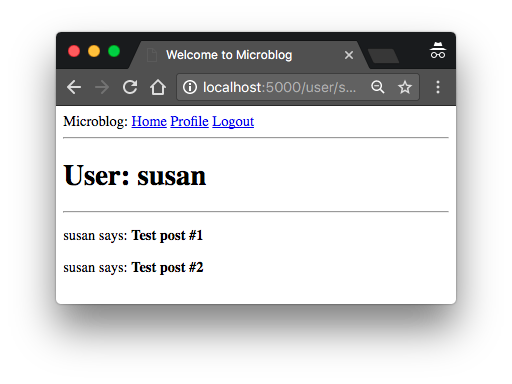
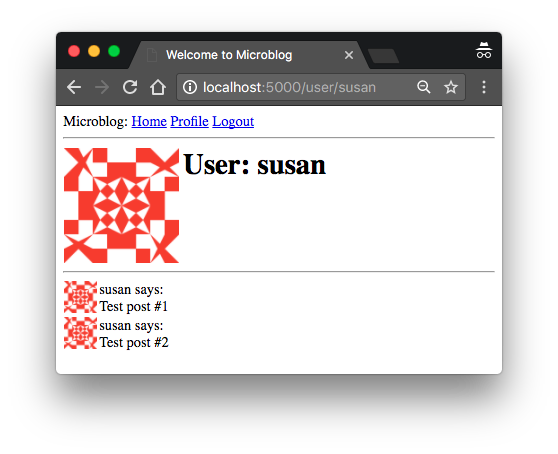
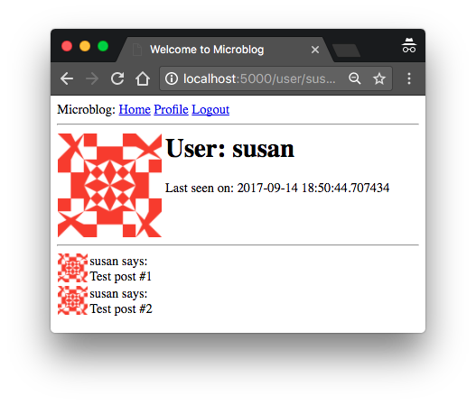

The Flask Mega-Tutorial Part VI: Profile Page and Avatars (2018)
Posted by
on under(Great news! There is a new version of this tutorial!)
This is the sixth installment of the Flask Mega-Tutorial series, in which I'm going to tell you how to create the user profile page.
For your reference, below is a list of the articles in this series.
- Chapter 1: Hello, World!
- Chapter 2: Templates
- Chapter 3: Web Forms
- Chapter 4: Database
- Chapter 5: User Logins
- Chapter 6: Profile Page and Avatars (this article)
- Chapter 7: Error Handling
- Chapter 8: Followers
- Chapter 9: Pagination
- Chapter 10: Email Support
- Chapter 11: Facelift
- Chapter 12: Dates and Times
- Chapter 13: I18n and L10n
- Chapter 14: Ajax
- Chapter 15: A Better Application Structure
- Chapter 16: Full-Text Search
- Chapter 17: Deployment on Linux
- Chapter 18: Deployment on Heroku
- Chapter 19: Deployment on Docker Containers
- Chapter 20: Some JavaScript Magic
- Chapter 21: User Notifications
- Chapter 22: Background Jobs
- Chapter 23: Application Programming Interfaces (APIs)
This chapter is going to be dedicated to adding user profile pages to the application. A user profile page is a page in which information about a user is presented, often with information entered by the users themselves. I will show you how to generate profile pages for all users dynamically, and then I'll add a small profile editor that users can use to enter their information.
The GitHub links for this chapter are: Browse, Zip, Diff.
User Profile Page
To create a user profile page, let's add a /user/<username> route to the application.
app/routes.py: User profile view function
@app.route('/user/<username>')
@login_required
def user(username):
user = User.query.filter_by(username=username).first_or_404()
posts = [
{'author': user, 'body': 'Test post #1'},
{'author': user, 'body': 'Test post #2'}
]
return render_template('user.html', user=user, posts=posts)
The @app.route decorator that I used to declare this view function looks a little bit different than the previous ones. In this case I have a dynamic component in it, which is indicated as the <username> URL component that is surrounded by < and >. When a route has a dynamic component, Flask will accept any text in that portion of the URL, and will invoke the view function with the actual text as an argument. For example, if the client browser requests URL /user/susan, the view function is going to be called with the argument username set to 'susan'. This view function is only going to be accessible to logged in users, so I have added the @login_required decorator from Flask-Login.
The implementation of this view function is fairly simple. I first try to load the user from the database using a query by the username. You have seen before that a database query can be executed by calling all() if you want to get all results, or first() if you want to get just the first result or None if there are zero results. In this view function I'm using a variant of first() called first_or_404(), which works exactly like first() when there are results, but in the case that there are no results automatically sends a 404 error back to the client. Executing the query in this way I save myself from checking if the query returned a user, because when the username does not exist in the database the function will not return and instead a 404 exception will be raised.
If the database query does not trigger a 404 error, then that means that a user with the given username was found. Next I initialize a fake list of posts for this user, finally render a new user.html template to which I pass the user object and the list of posts.
The user.html template is shown below:
app/templates/user.html: User profile template
{% extends "base.html" %}
{% block content %}
<h1>User: {{ user.username }}</h1>
<hr>
{% for post in posts %}
<p>
{{ post.author.username }} says: <b>{{ post.body }}</b>
</p>
{% endfor %}
{% endblock %}
The profile page is now complete, but a link to it does not exist anywhere in the web site. To make it a bit more easy for users to check their own profile, I'm going to add a link to it in the navigation bar at the top:
app/templates/base.html: User profile template
<div>
Microblog:
<a href="{{ url_for('index') }}">Home</a>
{% if current_user.is_anonymous %}
<a href="{{ url_for('login') }}">Login</a>
{% else %}
<a href="{{ url_for('user', username=current_user.username) }}">Profile</a>
<a href="{{ url_for('logout') }}">Logout</a>
{% endif %}
</div>
The only interesting change here is the url_for() call that is used to generate the link to the profile page. Since the user profile view function takes a dynamic argument, the url_for() function receives a value for it as a keyword argument. Since this is a link that points to the logged in's user profile, I can use Flask-Login's current_user to generate the correct URL.

Give the application a try now. Clicking on the Profile link at the top should take you to your own user page. At this point there are no links that will take to the profile page of other users, but if you want to access those pages you can type the URL by hand in the browser's address bar. For example, if you have a user named "john" registered on your application, you can view the corresponding user profile by typing http://localhost:5000/user/john in the address bar.
Avatars
I'm sure you agree that the profile pages that I just built are pretty boring. To make them a bit more interesting, I'm going to add user avatars, but instead of having to deal with a possibly large collection of uploaded images in the server, I'm going to use the Gravatar service to provide images for all users.
The Gravatar service is very simple to use. To request an image for a given user, a URL with the format https://www.gravatar.com/avatar/<hash>, where <hash> is the MD5 hash of the user's email address. Below you can see how to obtain the Gravatar URL for a user with email john@example.com:
>>> from hashlib import md5
>>> 'https://www.gravatar.com/avatar/' + md5(b'john@example.com').hexdigest()
'https://www.gravatar.com/avatar/d4c74594d841139328695756648b6bd6'
If you want to see an actual example, my own Gravatar URL is:
https://www.gravatar.com/avatar/729e26a2a2c7ff24a71958d4aa4e5f35
Here is what Gravatar returns for this URL:
By default the image size returned is 80x80 pixels, but a different size can be requested by adding a s argument to the URL's query string. For example, to obtain my own avatar as a 128x128 pixel image, the URL is \linebreak https://www.gravatar.com/avatar/729e26a2a2c7ff24a71958d4aa4e5f35?s=128.
Another interesting argument that can be passed to Gravatar as a query string argument is d, which determines what image Gravatar provides for users that do not have an avatar registered with the service. My favorite is called "identicon", which returns a nice geometric design that is different for every email. For example:

Note that some web browser extensions such as Ghostery block Gravatar images, as they consider that Automattic (the owners of the Gravatar service) can determine what sites you visit based on the requests they get for your avatar. If you don't see avatars in your browser, consider that the problem may be due to an extension that you have installed in your browser.
Since avatars are associated with users, it makes sense to add the logic that generates the avatar URLs to the user model.
app/models.py: User avatar URLs
from hashlib import md5
# ...
class User(UserMixin, db.Model):
# ...
def avatar(self, size):
digest = md5(self.email.lower().encode('utf-8')).hexdigest()
return 'https://www.gravatar.com/avatar/{}?d=identicon&s={}'.format(
digest, size)
The new avatar() method of the User class returns the URL of the user's avatar image, scaled to the requested size in pixels. For users that don't have an avatar registered, an "identicon" image will be generated. To generate the MD5 hash, I first convert the email to lower case, as this is required by the Gravatar service. Then, because the MD5 support in Python works on bytes and not on strings, I encode the string as bytes before passing it on to the hash function.
If you are interested in learning about other options offered by the Gravatar service, visit their documentation website.
The next step is to insert the avatar images in the user profile template:
app/templates/user.html: User avatar in template
{% extends "base.html" %}
{% block content %}
<table>
<tr valign="top">
<td><img src="{{ user.avatar(128) }}"></td>
<td><h1>User: {{ user.username }}</h1></td>
</tr>
</table>
<hr>
{% for post in posts %}
<p>
{{ post.author.username }} says: <b>{{ post.body }}</b>
</p>
{% endfor %}
{% endblock %}
The nice thing about making the User class responsible for returning avatar URLs is that if some day I decide Gravatar avatars are not what I want, I can just rewrite the avatar() method to return different URLs, and all the templates will start showing the new avatars automatically.
I have a nice big avatar at the top of the user profile page, but really there is no reason to stop there. I have some posts from the user at the bottom that could each have a little avatar as well. For the user profile page of course all posts will have the same avatar, but then I can implement the same functionality on the main page, and then each post will be decorated with the author's avatar, and that will look really nice.
To show avatars for the individual posts I just need to make one more small change in the template:
app/templates/user.html: User avatars in posts
{% extends "base.html" %}
{% block content %}
<table>
<tr valign="top">
<td><img src="{{ user.avatar(128) }}"></td>
<td><h1>User: {{ user.username }}</h1></td>
</tr>
</table>
<hr>
{% for post in posts %}
<table>
<tr valign="top">
<td><img src="{{ post.author.avatar(36) }}"></td>
<td>{{ post.author.username }} says:<br>{{ post.body }}</td>
</tr>
</table>
{% endfor %}
{% endblock %}

Using Jinja2 Sub-Templates
I designed the user profile page so that it displays the posts written by the user, along with their avatars. Now I want the index page to also display posts with a similar layout. I could just copy/paste the portion of the template that deals with the rendering of a post, but that is really not ideal because later if I decide to make changes to this layout I'm going to have to remember to update both templates.
Instead, I'm going to make a sub-template that just renders one post, and then I'm going to reference it from both the user.html and index.html templates. To begin, I can create the sub-template, with just the HTML markup for a single post. I'm going to name this template app/templates/_post.html. The _ prefix is just a naming convention to help me recognize which template files are sub-templates.
app/templates/_post.html: Post sub-template
<table>
<tr valign="top">
<td><img src="{{ post.author.avatar(36) }}"></td>
<td>{{ post.author.username }} says:<br>{{ post.body }}</td>
</tr>
</table>
To invoke this sub-template from the user.html template I use Jinja2's include statement:
app/templates/user.html: User avatars in posts
{% extends "base.html" %}
{% block content %}
<table>
<tr valign="top">
<td><img src="{{ user.avatar(128) }}"></td>
<td><h1>User: {{ user.username }}</h1></td>
</tr>
</table>
<hr>
{% for post in posts %}
{% include '_post.html' %}
{% endfor %}
{% endblock %}
The index page of the application isn't really fleshed out yet, so I'm not going to add this functionality there yet.
More Interesting Profiles
One problem the new user profile pages have is that they don't really show much on them. Users like to tell a bit about them on these pages, so I'm going to let them write something about themselves to show here. I'm also going to keep track of what was the last time each user accessed the site and also show display it on their profile page.
The first I need to do to support all this extra information is to extend the users table in the database with two new fields:
app/models.py: New fields in user model
class User(UserMixin, db.Model):
# ...
about_me = db.Column(db.String(140))
last_seen = db.Column(db.DateTime, default=datetime.utcnow)
Every time the database is modified it is necessary to generate a database migration. In Chapter 4 I showed you how to set up the application to track database changes through migration scripts. Now I have two new fields that I want to add to the database, so the first step is to generate the migration script:
(venv) $ flask db migrate -m "new fields in user model"
INFO [alembic.runtime.migration] Context impl SQLiteImpl.
INFO [alembic.runtime.migration] Will assume non-transactional DDL.
INFO [alembic.autogenerate.compare] Detected added column 'user.about_me'
INFO [alembic.autogenerate.compare] Detected added column 'user.last_seen'
Generating migrations/versions/37f06a334dbf_new_fields_in_user_model.py ... done
The output of the migrate command looks good, as it shows that the two new fields in the User class were detected. Now I can apply this change to the database:
(venv) $ flask db upgrade
INFO [alembic.runtime.migration] Context impl SQLiteImpl.
INFO [alembic.runtime.migration] Will assume non-transactional DDL.
INFO [alembic.runtime.migration] Running upgrade 780739b227a7 -> 37f06a334dbf, new fields in user model
I hope you realize how useful it is to work with a migration framework. Any users that were in the database are still there, the migration framework surgically applies the changes in the migration script without destroying any data.
For the next step, I'm going to add these two new fields to the user profile template:
app/templates/user.html: Show user information in user profile template
{% extends "base.html" %}
{% block content %}
<table>
<tr valign="top">
<td><img src="{{ user.avatar(128) }}"></td>
<td>
<h1>User: {{ user.username }}</h1>
{% if user.about_me %}<p>{{ user.about_me }}</p>{% endif %}
{% if user.last_seen %}<p>Last seen on: {{ user.last_seen }}</p>{% endif %}
</td>
</tr>
</table>
...
{% endblock %}
Note that I'm wrapping these two fields in Jinja2's conditionals, because I only want them to be visible if they are set. At this point these two new fields are empty for all users, so you are not going to see these fields if you run the application now.
Recording The Last Visit Time For a User
Let's start with the last_seen field, which is the easier of the two. What I want to do is write the current time on this field for a given user whenever that user sends a request to the server.
Adding the login to set this field on every possible view function that can be requested from the browser is obviously impractical, but executing a bit of generic logic ahead of a request being dispatched to a view function is such a common task in web applications that Flask offers it as a native feature. Take a look at the solution:
app/routes.py: Record time of last visit
from datetime import datetime
@app.before_request
def before_request():
if current_user.is_authenticated:
current_user.last_seen = datetime.utcnow()
db.session.commit()
The @before_request decorator from Flask register the decorated function to be executed right before the view function. This is extremely useful because now I can insert code that I want to execute before any view function in the application, and I can have it in a single place. The implementation simply checks if the current_user is logged in, and in that case sets the last_seen field to the current time. I mentioned this before, a server application needs to work in consistent time units, and the standard practice is to use the UTC time zone. Using the local time of the system is not a good idea, because then what goes in the database is dependent on your location. The last step is to commit the database session, so that the change made above is written to the database. If you are wondering why there is no db.session.add() before the commit, consider that when you reference current_user, Flask-Login will invoke the user loader callback function, which will run a database query that will put the target user in the database session. So you can add the user again in this function, but it is not necessary because it is already there.
If you view your profile page after you make this change, you will see the "Last seen on" line with a time that is very close to the current time. And if you navigate away from the profile page and then return, you will see that the time is constantly updated.
The fact that I'm storing these timestamps in the UTC timezone makes the time displayed on the profile page also be in UTC. In addition to that, the format of the time is not what you would expect, since it is actually the internal representation of the Python datetime object. For now, I'm not going to worry about these two issues, since I'm going to address the topic of handling dates and times in a web application in a later chapter.

Profile Editor
I also need to give users a form in which they can enter some information about themselves. The form is going to let users change their username, and also write something about themselves, to be stored in the new about_me field. Let's start writing a form class for it:
app/forms.py: Profile editor form
from wtforms import StringField, TextAreaField, SubmitField
from wtforms.validators import DataRequired, Length
# ...
class EditProfileForm(FlaskForm):
username = StringField('Username', validators=[DataRequired()])
about_me = TextAreaField('About me', validators=[Length(min=0, max=140)])
submit = SubmitField('Submit')
I'm using a new field type and a new validator in this form. For the "About" field I'm using a TextAreaField, which is a multi-line box in which the user can enter text. To validate this field I'm using Length, which will make sure that the text entered is between 0 and 140 characters, which is the space I have allocated for the corresponding field in the database.
The template that renders this form is shown below:
app/templates/edit_profile.html: Profile editor form
{% extends "base.html" %}
{% block content %}
<h1>Edit Profile</h1>
<form action="" method="post">
{{ form.hidden_tag() }}
<p>
{{ form.username.label }}<br>
{{ form.username(size=32) }}<br>
{% for error in form.username.errors %}
<span style="color: red;">[{{ error }}]</span>
{% endfor %}
</p>
<p>
{{ form.about_me.label }}<br>
{{ form.about_me(cols=50, rows=4) }}<br>
{% for error in form.about_me.errors %}
<span style="color: red;">[{{ error }}]</span>
{% endfor %}
</p>
<p>{{ form.submit() }}</p>
</form>
{% endblock %}
And finally, here is the view function that ties everything together:
app/routes.py: Edit profile view function
from app.forms import EditProfileForm
@app.route('/edit_profile', methods=['GET', 'POST'])
@login_required
def edit_profile():
form = EditProfileForm()
if form.validate_on_submit():
current_user.username = form.username.data
current_user.about_me = form.about_me.data
db.session.commit()
flash('Your changes have been saved.')
return redirect(url_for('edit_profile'))
elif request.method == 'GET':
form.username.data = current_user.username
form.about_me.data = current_user.about_me
return render_template('edit_profile.html', title='Edit Profile',
form=form)
This view function processes the form in a slightly different way. If validate_on_submit() returns True I copy the data from the form into the user object and then write the object to the database. But when validate_on_submit() returns False it can be due to two different reasons. First, it can be because the browser just sent a GET request, which I need to respond by providing an initial version of the form template. It can also be when the browser sends a POST request with form data, but something in that data is invalid. For this form, I need to treat these two cases separately. When the form is being requested for the first time with a GET request, I want to pre-populate the fields with the data that is stored in the database, so I need to do the reverse of what I did on the submission case and move the data stored in the user fields to the form, as this will ensure that those form fields have the current data stored for the user. But in the case of a validation error I do not want to write anything to the form fields, because those were already populated by WTForms. To distinguish between these two cases, I check request.method, which will be GET for the initial request, and POST for a submission that failed validation.

To make it easy for users to access the profile editor page, I can add a link in their profile page:
app/templates/user.html: Edit profile link
{% if user == current_user %}
<p><a href="{{ url_for('edit_profile') }}">Edit your profile</a></p>
{% endif %}
Pay attention to the clever conditional I'm using to make sure that the Edit link appears when you are viewing your own profile, but not when you are viewing the profile of someone else.

Become a Patron!
Hello, and thank you for visiting my blog! If you enjoyed this article, please consider supporting my work on this blog on Patreon!

-
#101 midhat said
Thank you Miguel,You Are Osm And this site is very useful for my project ,Thanks a lot
-
#102 Steve D. said
When I test out the edit_profile and add some About Me text and click Submit, the value is not persisted. I've compared my code to yours and am not seeing my error. The previous section with the last_seen date works, so the database changes were pushed.
Any idea what could be causing this would be greatly appreciated. Also very clear tutorials to this point.
-
#103 Miguel Grinberg said
@Steve: If you have the db.session.commit() call, then all I can suggest is that you add some print statements in your route handler function to confirm that you are setting the correct values in the attributes of the User object.
-
#104 Steve D. said
Thank you, not sure why I didn't think to do that... On edit_profile.html, I forgot the o in method="post" so it went to the elif instead.
Back to forward progress!
-
#105 Labhrás said
Hello Miguel,
Thanks for the tutorial.
I've a python coding question.
In the edit_profile method, the username is set as follows:
form.username.data = current_user.username
The username is a Class variable set in the EditProfileForm class. Does .data correspond to the DataRequired() used when setting the username? i.e.
username = StringField('Username', validators=[DataRequired()])I also see it used here to validate the email:
user = User.query.filter_by(email=email.data).first()So when validating data fields, the DataRequired class needs to be invoked through .data, is that right?
-
#106 Miguel Grinberg said
@Labhrás: WTForms does some advanced techniques. You are correct that the username attribute is a class variable, but when a form object is instantiated those class attributes are overriden, so form.username does not really refer to the class variable but to an instance variable of that particular form object. Think of the class variables as sort of a "template" that helps WTForms know what attributes to define in your form objects. This technique is also used by SQLAlchemy, by the way.
-
#107 John Ingles said
Any advice for performing migrations when using Mongodb? I've found your tutorial very helpful, but I'm using mongoengine instead of SQLAlchemy.
-
#108 Miguel Grinberg said
@John: Unfortunately I do not have experience with any migration tool for MongoDB, but searching on PyPI there are a couple, so you may want to give those a try.
-
#109 Wolfgang Kittenberger said
Hello Miguel,
The structure of the code in this tutorial is great! I really like it!!! Anyway, I have two proposals: In many years of programming I have learned to use named constants for values which are distributed over different files, e.g. in this tutorial the size of the username field in modules, templates,... So I created a file in the base directory:
/consts.py: class CONSTS(object): USERNAME = 64 EMAIL = 120 PASSWORD = 64 PASSWORD_HASH = 12 ....This file gets imported in app/init.py with
from consts import CONSTSNow I can set the size of the db.Column's with named constants, e.g.:
app/models.py from app import CONSTS .... class User(UserMixin, db.Model): __tablename__ = 'users' id = db.Column(db.Integer, primary_key=True) username = db.Column(db.String(CONSTS.USERNAME), index=True, unique=True) email = db.Column(db.String(CONSTS.EMAIL), index=True, unique=True) password_hash = db.Column(db.String(CONSTS.PASSWORD_HASH)) ....And I can also forward the size constants to the templates. For this I have to adapt the routes code and use an additional keyword parameter CONSTS in the call to the render_template function:
app/routes.py: .... from app import CONSTS .... @app.route('/login', methods=['GET', 'POST']) def login(): if current_user.is_authenticated: return redirect(url_for('index')) form = LoginForm() .... return render_template('login.html', title='Sign In', form=form, CONSTS=CONSTS)And here comes the second proposal: modify the rendering of the form fields to use DRY. I defined a jinja macro:
app/templates/_render_with_size.html: {% macro render_with_size(field, field_size) %} <p> {{ field.label }} <br> {{ field(size=field_size) }} <br> {% for error in field.errors %} <span style="color:red;">{{ error }}</span> {% endfor %} </p> {% endmacro %}Finally, I can simplify the templates with this macro and use the field size constants, e.g.:
app/templates/login.html: {% from "_render_with_size.html" import render_with_size %} {% extends "base.html" %} {% block content %} <h1>Sign In</h1> <form action="" method="post" novalidate> {{ form.hidden_tag() }} <form action="" method="post" novalidate> {{ form.hidden_tag() }} {{ render_with_size(form.username, CONSTS.USERNAME) }} {{ render_with_size(form.password, CONSTS.PASSWORD) }} <p>{{ form.remember_me() }} {{ form.remember_me.label }}</p> <p>{{ form.submit() }}</p> </form> <p>New User? <a href="{{ url_for('register') }}">Click to Register!</a></p> {% endblock %}Sorry for the lengthy message and best regards
Wolfgang
-
#110 Anthony said
Question:
Why don't we have to import before_request from flask_login ?
Seems the same as using login_required and for that we had to import it?
thanks!
-
#111 Miguel Grinberg said
@Anthony: before_request comes from Flask, not Flask-Login. It is an attribute of the Flask object.
-
#112 Cem said
Hello Miguel. You have a great tutorial here.
I have a question about the part you use the user.avatar(128)
instead of calling a function of the user object wouldn't it be better practice to call the avatar as an attribute of user object it would be better to save the result of avatar object to database as avatar attribute and call so we would not have to execute and wait for the result of the avatar function and that would be faster ( in ideal case).
I used .net MVC for a long time and have never seen the usage of function in the HTML part.
Thank you. -
#113 Miguel Grinberg said
@Cem: I wouldn't call it a better practice. Generating an md5 hash is a relatively cheap operation, but if you prefer to store it in the database that's fine, I don't see a problem with it. You'll just need to remember to update the hash when/if the email changes.
-
#114 rafcio said
Very great tutorial. Great explanation, and you explained each themat in details what very often is ignorring in tutorials.
-
#115 Faris said
Hi Miguel, I've been following this tutorial from the beginning and I have to say you do a very, very good job! Everything is making sense so far and I'm not feeling overwhelmed! Great work!
-
#116 Squirrel said
Great tutorial!
Just a question. Updating the date and time last seen also works implemented in the load_user function in models.py.
Is this a worse way to do it than using before_request? -
#117 Miguel Grinberg said
@Squirrel: In terms of correctness, I think I prefer doing it in before_request. The user_loader function is called the first time current_user is referenced, so if you have a route that does not need current_user at all then the update will not happen.
-
#118 Julian said
Hi,
when changing the profiles username it does not check if the username already exists, which causes a duplicate in the database, which causes an error if the db is configured in a way that doesn't permit duplicate entries.
Also another thing: In user.html we are checking if user == current_user, which seems redundant given that the pages requirees login and therefore user == current_user, or am I wrong?
The tutorial is perfect. Code is very clean.
Another question: In forms.py, we have two functions, validate_username and validate_email, which are not called from routes.py, but they are checked nevertheless. I was wondering if flask_wtf calls those methods?
Could I for example just implement validate_old_password(..)?
I can try it just out.Thanks again for the tut.
-
#119 Miguel Grinberg said
@Julian: the username duplicates is done on purpose to set the stage for the next chapter which is about error handling.
The "user == current_user" check is to determine if you are viewing your own profile page, or that of some other user. The Edit link only appears when you view your own profile, for example.
The validate_ methods are a way to define custom validation procedures in WTForms and Flask-WTF. You can add validations for any fields in this way. These methods are called by WTForms during form validation, they are not called by the application.
-
#120 Emmanuel said
Hello Miguel, I am struggling to understand why 'form' object in "form = EditProfileForm()" on the 4th line in the code below does not get reassigned when request.method == POST so that validate_on_submit would ALWAYS return false.
from app.forms import EditProfileForm
@app.route('/edit_profile', methods=['GET', 'POST'])
@login_required
def edit_profile():
form = EditProfileForm()
if form.validate_on_submit():
current_user.username = form.username.data
current_user.about_me = form.about_me.data
db.session.commit()
flash('Your changes have been saved.')
return redirect(url_for('edit_profile'))
elif request.method == 'GET':
form.username.data = current_user.username
form.about_me.data = current_user.about_me
return render_template('edit_profile.html', title='Edit Profile',
form=form) -
#121 Miguel Grinberg said
@Emmanuel: validate on submit checks two things, that the format was submitted, and that the fields all validate. Are you sure the False return is due to the form not being submitted? I bet you have a form validation problem instead. Are you using your own code or mine? Maybe download and test with my exact version of the application to see if that works better. Then you can compare it against your version to find the mistake.
-
#122 Aniket Parkar said
Hi Miguel,
I have a question regarding post.body in template, what if I have an html text written i want it to be displayed as html not a text? Eg: One post body contains This is what is written but rest is normal. <h4> Again something </h4>
so in loop when i tried it was displayed as plane text wit bold as was used prior to {{post.body}}How to get entire HTML text within body displayed as HTML?
-
#123 Miguel Grinberg said
@Aniket: as a security measure, Jinja2 always escapes all texts by default. If this variable that you have with HTML is safe to print as HTML, you can do so with the "safe" filter: {{ variable | safe }}. Your variable can be considered safe if the HTML in it is generated internally by your application. If the contents of the variable come from a user, then it is unsafe, so you need to sanitize it before you can consider it safe. For example, you may want to remove all <script> tags, etc.
-
#124 Gabriel Podolan said
Hi,
First of all, great tutorial. I'm learning a lot with it.
While going through this chapter I ran into an issue I'm not able to solve and I was hoping you could give me a hint on how to deal with it.
When I included the line
<a href="{{ url_for('user', username=current_user.username) }}">Profile</a>in base.html I started getting the following traceback dump:[2019-11-09 21:47:14,332] ERROR in app: Exception on / [GET] Traceback (most recent call last): File "/Library/Python/3.7/site-packages/flask/app.py", line 2446, in wsgi_app response = self.full_dispatch_request() File "/Library/Python/3.7/site-packages/flask/app.py", line 1951, in full_dispatch_request rv = self.handle_user_exception(e) File "/Library/Python/3.7/site-packages/flask/app.py", line 1820, in handle_user_exception reraise(exc_type, exc_value, tb) File "/Library/Python/3.7/site-packages/flask/_compat.py", line 39, in reraise raise value File "/Library/Python/3.7/site-packages/flask/app.py", line 1949, in full_dispatch_request rv = self.dispatch_request() File "/Library/Python/3.7/site-packages/flask/app.py", line 1935, in dispatch_request return self.view_functions[rule.endpoint](**req.view_args) File "/Library/Python/3.7/site-packages/flask_login/utils.py", line 261, in decorated_view return func(*args, **kwargs) File "/Users/gpodolan/microblog/app/routes.py", line 22, in index return render_template('index.html', title="Home", posts=posts) File "/Library/Python/3.7/site-packages/flask/templating.py", line 140, in render_template ctx.app, File "/Library/Python/3.7/site-packages/flask/templating.py", line 120, in _render rv = template.render(context) File "/Library/Python/3.7/site-packages/jinja2/asyncsupport.py", line 76, in render return original_render(self, *args, **kwargs) File "/Library/Python/3.7/site-packages/jinja2/environment.py", line 1008, in render return self.environment.handle_exception(exc_info, True) File "/Library/Python/3.7/site-packages/jinja2/environment.py", line 780, in handle_exception reraise(exc_type, exc_value, tb) File "/Library/Python/3.7/site-packages/jinja2/_compat.py", line 37, in reraise raise value.with_traceback(tb) File "/Users/gpodolan/microblog/app/templates/index.html", line 1, in top-level template code {% extends "base.html" %} File "/Library/Python/3.7/site-packages/jinja2/environment.py", line 1005, in render return concat(self.root_render_func(self.new_context(vars))) File "/Users/gpodolan/microblog/app/templates/index.html", line 14, in root File "/Users/gpodolan/microblog/app/templates/base.html", line 34, in root File "/Library/Python/3.7/site-packages/jinja2/runtime.py", line 262, in call return __obj(*args, **kwargs) File "/Library/Python/3.7/site-packages/flask/helpers.py", line 370, in url_for return appctx.app.handle_url_build_error(error, endpoint, values) File "/Library/Python/3.7/site-packages/flask/app.py", line 2215, in handle_url_build_error reraise(exc_type, exc_value, tb) File "/Library/Python/3.7/site-packages/flask/_compat.py", line 39, in reraise raise value File "/Library/Python/3.7/site-packages/flask/helpers.py", line 358, in url_for endpoint, values, method=method, force_external=external File "/Library/Python/3.7/site-packages/werkzeug/routing.py", line 2020, in build raise BuildError(endpoint, values, method, self) werkzeug.routing.BuildError: Could not build url for endpoint 'user' with values ['username']. Did you mean 'username' instead?I tried googling it but could not find a solution that would work. Can you please help? I am using Python 3.7.3 and Flask 1.1.1
Thanks
-
#125 Miguel Grinberg said
@Gabriel: Yes, the error means that the user() function is not known to Flask. This is the route function that handles the /user/<username> URL. If you used a different name than user() for this function, then the first argument to url_for() needs to be the name that you used.